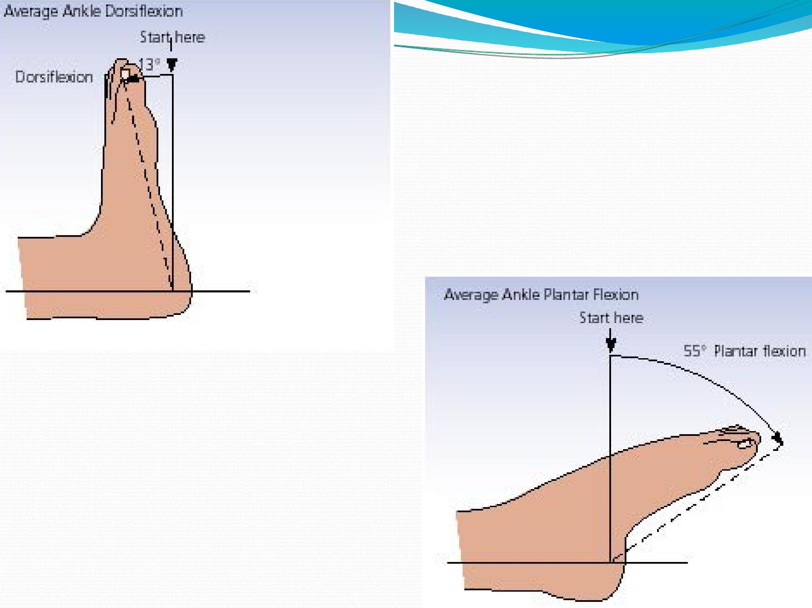
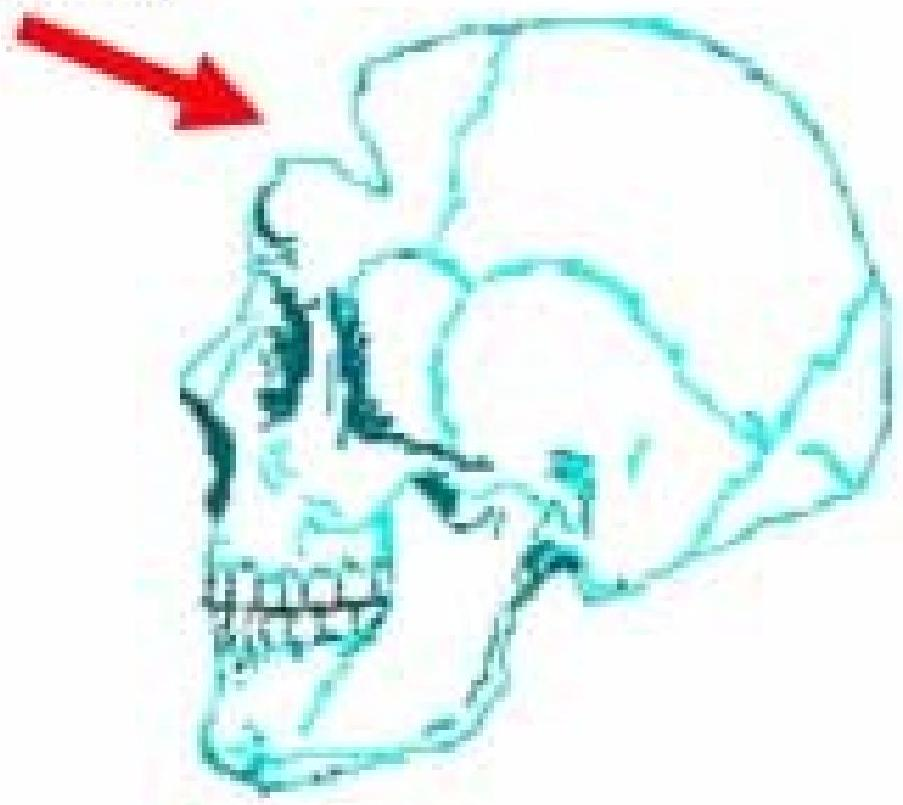

Musculoskeletal & Specific Trauma
Spinal Cord Injuries (SCI) tetraplegia (quadriplegia): paralysis from neck down
Loss of bowel and bladder control
Loss of motor function
Loss of reflex activity
Loss of sensation
Coping issues
*Christopher Reeve is example of this injury*
Complete: spinal cord severed and no nerve impulses below level of injury
Incomplete: allow some function and movement
Causes of SCI Primary
Hyperflexion (moved forward excessively)
Hyperextension (MVA)
Axial loading (blow at top of head causes shattering)
Excessive rotation (turning beyond normal range)
Penetrating (knife, bullet)
Secondary
Neurogenic shock
Vascular insult
Hemorrhage
Ischemia
Electrolyte imbalance
Cervical Injuries
Anterior cord syndrome Damage to anterior portion of gray and white matter as a result of decreased blood supply..pt will have a loss of motor function, pain, and temperature sensation but touch, vibration, and position remain intact
Posterior cord lesion
Damage to posterior white and gray matter..pt has intact motor function but loss of vibratory sense, crude touch, and position sensation
Brown Sequard syndrome
Result of penetrating injury that causes hemiseection of spinal cord.
Motor function, proprioseption, vibration, and deep touch are lost on the same side as injury (ipsilateral)
On the other side (contralateral) the sensation of pain, temperature and light touch are affected
Central cord syndrome
Loss of motor function in upper extremities and varying degrees of sensation remain
Assessment Of SCI
1st assess respiratory status
ET tube may be necessary if compromised 2nd assess for intraabdominal hemorrhage (hypotension, tachycardia, weak and thready pulse) 3rd assess motor function
Emergency Care of SCI Observe for signs of autonomic dysreflexia
Sever HTN, bradycardia, sever headache, nasal stuffiness, and flushing
Caused by noxious stimuli like distended bladder or constipation Immediate interventions
Place in sitting position
Call doctor
Loosen tight clothes
Check foley tubing if present
Check for impaction
Check room temp
Monitor BP q10-15 minutes
NRSG DX Ineffective tissue perfusion r/t interruption of arterial flow Ineffective airway clearance r/t SCI Ineffective breathing
Treatment of SCI
Immobilize fx
Proper body alignment
Traction is possible
Monitor vs q4 hours or more
Neuro checks q4 hours or more
Monitor for neurogenic shock (hypotension and bradycardia)
Prepare for possible surgery
Teach skin care, ADLs, wound prevention techniques, bowel and bladder training, medications, and sexuality
Brain Injuries (TBI)
Open- skull fx or when skull is pierced by penetrating object
Linear fx- simple clean break
Depressed fx- bone pressed in towards tissue
Open fx-lacerated scalp that creates opening to brain tissue
Comminuted fx- bone fragments and depresses into brain tissue
Basilar- unique fx at base of skull with CSF leaking though the ear or nose
Closed- blunt trauma
Mild concussion-brief LOC
Diffuse axonal injury- usually from MVA
May go into coma
Contusion-bruising of brain
Site of impact (coupe)
Opposite side of impact (contrecoupe)
Laceration-tearing of cortical surface vessels that leads to hemorrhage edema and inflammation
Open Head Injury
Closed Head Injury
Always assume c-spine injury
ABC highest priority Control bleeding right away
Motor Vehicle Collisions
Frontal
Front of car stops and driver keeps going
Injuries: Seatbelt, Steering wheel, TBI, cspine, flail chest, myocardial contusion
Side
Injuries: Cspine, flail chest, pneumothorax
Rear
Hyperextension, cspine
Rollover
Multiple injuries
Other types of multiple injuries
Motorcyle
Tib/fib, chest, abd, TBI, cspine, femur
Pedestrian
Femur, chest, lower extremities
Falls
Calcaneous, compression, wrist, TBI
Battles sign Raccoon eyes Flail chest Tension Pneumothorax Hemothorax
Blunt Trauma by Force Acceleration-caused by external force contacting head
Deceleration- when head suddenly stops or hits a
Increased ICP
Normal ICP is $10-15 \mathrm{mmHg}$ Normal increases occur with coughing, sneezing, defecation
Leading cause of death for head trauma
As ICP increases cerebral
ICP continued
3 types of edema
Vasogenic: increase in brain tissue volume Cytotoxic: result of hypoxia Interstitial: occurs with brain swelling
Hematoma
Epidural- bleed b/w dura and inner table
Subdural-bleed below dura and above arachoid Intracerebral- accumulation of blood in
Hydrocephalus
abnormal increase in CSF volume
Causes: impaired reabsorption from subarachnoid hemorrhage or meningitis
Brain Herniation
Increased ICP will shift and move brain tissue downward
Central Herniation
Downward shift to brainstem
S/S
Cheyne stokes, pinpoint pupils, hemodynamic instability
The most life threatening is Uncal because it causes pressure on the 3rd cranial nerve S/S
Dilated, nonreactive pupils, ptosis, rapidly decreased LOC
Interventions for musculoskeletal trauma
Fractures
Open
Closed
Spontaneous
Stress
Compression
Greenstick
Spiral
Oblique
Impacted
Displaced
Non-displaced
fragmented
Stages of healing 48-72 hours after injury hematoma forms at break site
Area of bone necrosis forms secondary to diminished blood flow
Factors that affect healing
Age
Severity of trauma
Bone injured
Inadequate
immobilization
Infection
Musculoskeletal assessment
Assess for life threatening complications Skin color and temp Movement Sensation Pulses especially distal to the injury Cap refill
diagnostics
No special lab tests except maybe D-Dimer for clots H/H could be low due to bleeding
CT
Bone scan
Nursing diagnosis
Acute pain
Risk for infection
Impaired physical mobility
Etc.
interventions
Inspect fx site
Palpate area lightly
Assess motor function
Immobilize extremity
Realignment
Cast
education
Provide education regarding medication Instruct the client on s/s of infection (foul discharge, purulent drainage, fever, lethargy, etc)
Fx of clavicle usually fall
Fx of scapula not common and caused by direct impact Fx of humerus common in
older adult
Fx of olecrenon usually from fall directly onto elbow Fx of radius and ulna usually
Ex of ribs and sternum caused by chest trauma and potentially can puncture lungs, heart and arteries
Fx of pelvis can also cause major internal damage because of the
Femur and Pelvic Fractures
High incidence of hemmorage Femur fx-cast, brace, splint, traction
Fat embolism: fat from bone released into blood and into heart, lungs, etc
Pelvic- girdle, assess for stability